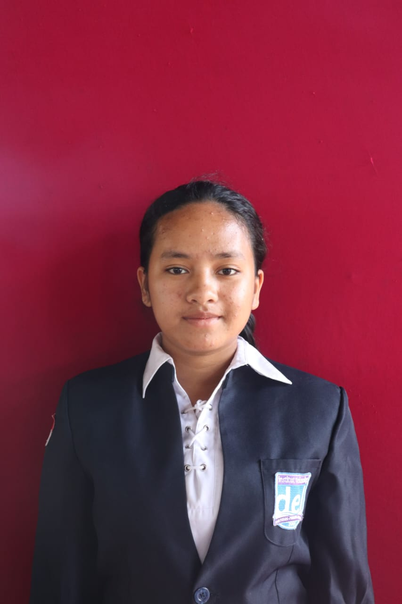

Landing Page Saulina AI
2026Landing page perusahaan jasa AI untuk tugas praktikum PABWE, dibangun dengan HTML & CSS murni.
HTML
CSS

Mahasiswa Informatika · Web & AI Enthusiast
Mahasiswa Informatika yang tertarik pada pengembangan web dan penerapan kecerdasan buatan untuk menyelesaikan masalah nyata. Terbiasa membangun antarmuka dengan HTML, CSS, Bootstrap, dan Tailwind, serta mulai mengeksplorasi integrasi model AI ke dalam aplikasi web sederhana.
Sitoluama, Laguboti
Jurusan MIPA
Landing page perusahaan jasa AI untuk tugas praktikum PABWE, dibangun dengan HTML & CSS murni.
Daftar dan halaman detail artikel riset AI, dibangun dengan Bootstrap 5 dan Bootstrap Icons.
Dibangun dengan Tailwind CSS 4, melengkapi landing page dan blog pada rangkaian tugas praktikum yang sama.
Mengembangkan platform web interaktif untuk pelestarian budaya Batak Toba, sebagai entri kategori UI/UX.
Hard skills
Soft skills
Software